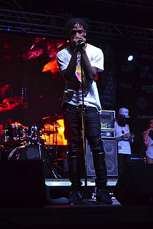
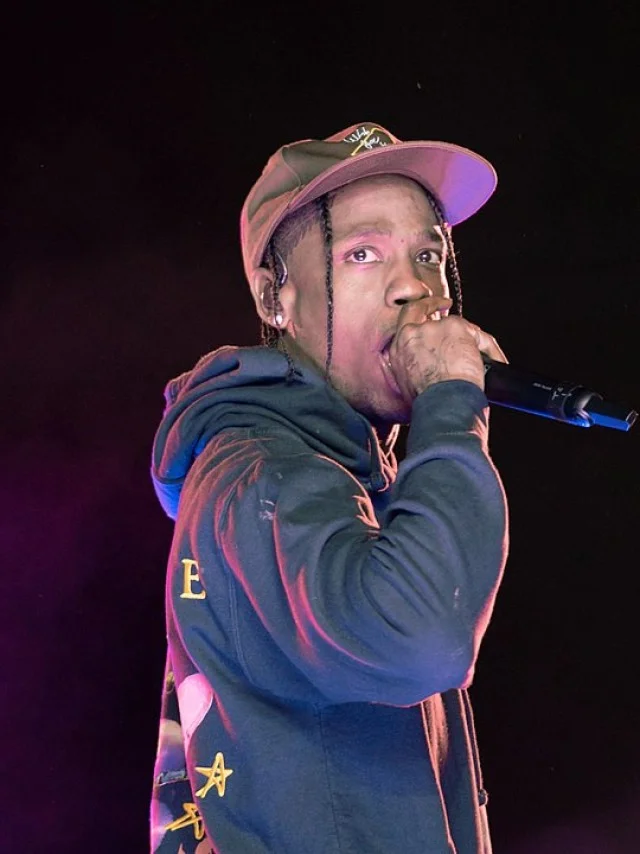
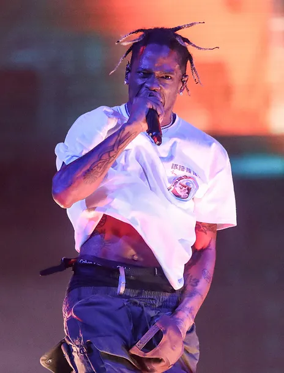
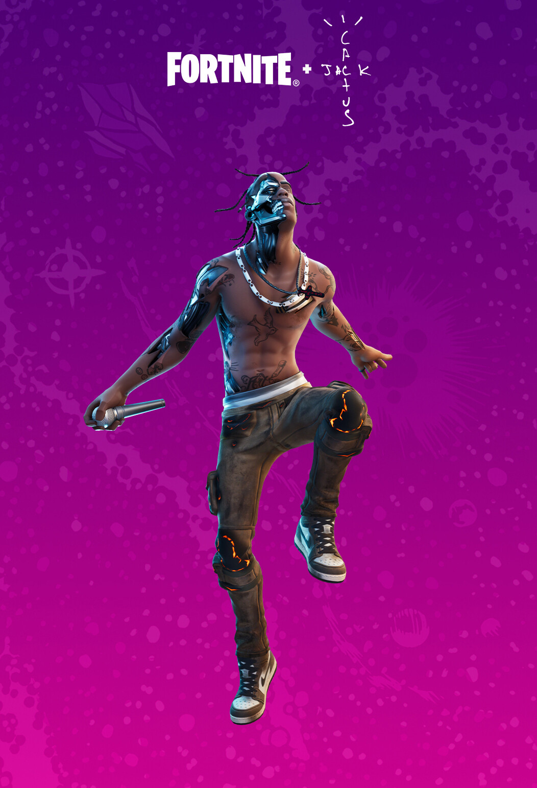

Aos 17 anos, Travis iniciou sua carreira como produtor musical, com foco na produção de hip-hop. Posteriormente, ele entrou em sua primeira parceria com Chris Holloway, seu amigo de longa data, formando a dupla The Graduates ("Os Graduados", em tradução livre). Em 2008, a dupla lançou o seu primeiro EP sem título na rede social Myspace.
No ano seguinte, Travis e OG Chess, um dos seus colegas de escola, formou o grupo The Classmates ("Os Colegas", em tradução livre). The Classmates lançou dois projetos: Buddy Rich, em 2009, e Cruis'n USA em 2010. Travis lidou principalmente com o trabalho de produção em ambos os projetos. A dupla permaneceu unida até o final de 2012, quando conflitos pessoais e disputas financeiras levaram à dissolução do grupo.
Depois de sair da faculdade, ele se mudou de Houston, Texas para Washington, Nova York, onde começou a trabalhar com o amigo Mike Waxx, dono do site de música Illroots. Depois de se mudar para Nova York, Travis dormiu no chão na casa de seu amigo e passou a maior parte de seu tempo no estúdio de Just Blaze. Eventualmente frustrado em Nova York, e com a falta de progressão na carreira, mudou-se para Los Angeles, Califórnia, depois de apenas quatro meses no estado.
Em Los Angeles, foi abandonado pelo seu amigo, que havia prometido ajudá-lo fornecendo moradia. Seus pais o interromperam financeiramente e ele acabou sendo forçado a se mudar para Houston, mas seus pais o expulsaram de casa. Travis, então, voltou para Los Angeles mais uma vez e começou a dormir no sofá de um amigo que estudou na Universidade do Sul da Califórnia. O rapper de Atlanta e dono da Grand Hustle Records, T. I. mais tarde ouviria uma de suas produções, "Lights (Love Sick)". Enquanto ainda estava em Los Angeles, um representante de T. I. entrou em contato com Travis, pedindo-lhe para participar de uma reunião no estúdio. Durante a reunião, T. I. improvisou "Animal", uma das produções do rapper.
O primeiro projeto solo de Travis é uma mixtape intitulada Owl Pharaoh, que foi lançada como um download gratuito em 2012. No entanto, o projeto foi adiado, e foi anunciado para ser lançado em uma versão posterior. O projeto foi mais tarde recriado por Kanye West e Mike Dean, e foi novamente atrasado por conta de problemas de liberação dos samples. Na promoção do projeto, Webster lançaria a faixa "Blocka La Flame", um remix do single "Blocka", do companheiro de um amigo da GOOD Music, Pusha T (que conta com produção e vocais de Travis). A canção foi produzida por Young Chop, com produção de Travis, juntamente com Mike Dean. Em 22 de março de 2013, Travis lançou o videoclipe de uma música intitulada "Quintana, que apareceu em Owl Pharaoh. A mixtape da versão da canção trazia participações especiais do rapper Wale, enquanto a produção ficou a cargo do próprio Travis, juntamente com Sak Pase e Mike Dean.
No dia 27 de março de 2013, a revista XXL revelou que Webster era um dos componentes de sua lista Freshman Class daquele ano, uma lista anual dos artistas mais promissores do hip-hop. Em 29 de março de 2013, depois de sua entrevista com o DJ britânico Semtex, Travis estreou um trecho do seu single comercial de estreia, intitulado "Upper Echelon", com 2 Chainz e T. I. Em 2 de abril de 2013, Travis declarou que Owl Pharaoh era a sua mixtape de estreia e seria lançado na iTunes Store no dia 21 de maio daquele ano. Em 23 de abril de 2013, o "Upper Echelon" foi enviado para as rádios americanas. O EP foi lançado para download gratuito.
Em 13 de março de 2014, Travis gravou uma nova canção, que deveria ser incluída em sua segunda mixtape, intitulada Days Before Rodeo. Mais tarde, ele usou a sua conta no Twitter para anunciar Rodeo, como o título oficial de seu álbum de estúdio de estreia em uma grande gravadora. Em 5 de Maio de 2014, ele liberou a versão completa da música com o seu novo título "Don't Play", apresentando um sample da música "M. O. N. E. Y" da banda britânica de rock The 1975. Em 11 de julho de 2014, "Don't Play", foi oficialmente lançado como single de Days Before Rodeo, através de distribuição digital. Nesta mesma época Travis também participou da faixa ''Ghosttown'' do álbum Unknown Memory de Yung Lean.
Após o sucesso de Days Before Rodeo, Scott anunciou que ele seria atração em uma turnê chamada The Rodeo Tour, com o rapper Young Thug, do grupo musical Rich Gang e produtor de Metro Boomin. A turnê começou em 1º de março de 2015, em Santa Ana, Califórnia, e terminou em 1º de abril de 2015, em Portland, Oregon, atravessando grandes cidades como Denver, Houston, Chicago, Detroit, Nova York, Atlanta, Filadélfia, San Diego, Los Angeles, San Francisco, e Seattle. Depois que seus primeiros shows se esgotaram muito rapidamente, outros shows foram adicionados a algumas cidades como Los Angeles e Nova York. Artistas como Kanye West, Chris Brown, Wale e Birdman tiveram participações especiais em algumas cidades. A The Rodeo Tour foi aclamado como uma das turnês de rap mais bárbaras dos dias de hoje.
Rodeo foi lançado em 4 de setembro de 2015, pela Grand Hustle e a Epic Records. O álbum conta com participações especiais de Quavo, Juicy J, Kanye West, The Weeknd, Swae Lee, Chief Keef, Justin Bieber, Young Thug, Toro y Moi e Big Buck, e inclui a produção de Mike Dean, Kanye West, WondaGurl, Suber, DJ Dahi, Metro Boomin, 1500 or Nothin', Sonny Digital, Southside, Terrace Martin, Zaytoven, Pharrell Williams e do próprio Travis, entre outros. O álbum foi lançado juntamente com outros dois singles: "3500" com Future e 2 Chainz, e "Antidote", que tornou-se seu single com mais alta posição até então no quadro da Billboard Hot 100, atingindo o 16º lugar. Rodeo recebeu em geral resenhas positivas dos críticos e estreou em terceiro lugar na lista do Billboard 200. Ele também estreou em primeiro lugar na Billboard Rap Albums.
Em 4 de janeiro de 2016, Travis anunciou que ele teria um novo álbum de estúdio a caminho. Em 8 de fevereiro de 2016, foi anunciado que os rappers iLoveMakonnen e Vic Mensa estariam com Travis Scott na campanha "WANGSQUAD" do estilista Alexander Wang. Em 29 de março de 2016, Lyor Cohen, executivo da gravadora 300 Entertainment, revelou que Travis e Young Thug estavam lançando um single juntos e chamaram o próximo álbum de Travis de "clássico". Em 7 de abril de 2016, Travis deu uma amostra ao lado de Young Thug do single em um de seus shows. Em 17 de maio de 2016, Travis anunciou que o título de seu segundo álbum seria Birds in the Trap Sing McKnight, ao mesmo tempo em que confirmava o título de seu terceiro álbum: AstroWorld. Em 3 de junho de 2016, o single colaborativo entre Young Thug e Travis foi lançado, intitulado "Pick Up the Phone". O single, que também conta com os vocais de Quavo, do grupo de rapper Migos, alcançou a posição nº 43 na Billboard Hot 100 e foi certificado com platina duplo pela Recording Industry Association of America (RIAA).

Em 31 de agosto de 2016, Travis anunciou através de uma postagem no Instagram que o disco Birds in the Trap Sing McKnight foi finalmente concluído. Ele estreou o álbum em uma rádio americana em 2 de setembro de 2016, e mais tarde o álbum foi lançado no iTunes e Apple Music. Em 11 de setembro de 2016, o álbum de Travis Scott tornou-se o seu primeiro a ocupar o primeiro lugar na Billboard 200. Em 12 de setembro de 2016, Jody Gerson, CEO da Universal Music Group anunciou que a gravadora assinou um contrato mundial com Travis Scott.
Na mesma ocasião em que Travis estreou Birds in the Trap Sing McKnight, ele também anunciou que seria produtor executivo de Cruel Winter, álbum de Kanye West como uma continuação de seu álbum colaborativo na GOOD Music
Scott se apresentou no All-Star Weekend em 16 de fevereiro de 2017, em Nova Orleans na Champion Square. Ele também se apresentou em Nova Orleans em um outro festival musical em 10 de março de 2017. Em 5 de março, Scott anunciou uma turnê chamada "Birds Eye View". No dia seguinte, as datas e as cidades da turnê foram reveladas, com início em 10 de março em Nova Orleans, Louisiana, e término no dia 2 de junho, em Eugene, Oregon. Em março de 2017, Travis anunciou o lançamento de seu próprio selo fonográfico, nomeado como Cactus Jack Records. Durante uma entrevista, Travis disse: "Eu não estou fazendo isso para ter controle financeiro sobre minha música. Quero em primeiro lugar ajudar outros artistas, lançar novos nomes, fornecer oportunidades. Eu quero fazer por eles o que aconteceu comigo, mas melhor. Por melhor eu quero dizer sem besteira. Não mentir para os artistas sobre as datas de lançamento do álbum ou os orçamentos de vídeos e álbuns." Em 15 de junho de 2017, Scott anunciou que estaria levando a turnê "Birds Eye View" para a Europa. A turnê europeia iniciou-se no dia 23 de junho, em Paris, França, e terminou em 9 de julho, em Turku, na Finlândia. Esta etapa europeia da turnê aconteceu em festivais conjuntos ou em casas de show menores.
Em 3 de abril de 2017, foi relatado que Scott estava trabalhando em um álbum colaborativo com o rapper Quavo, potencialmente a ser lançado mais tarde, em 2017. Em entrevista à GQ, ele confirmou: "O álbum do Quavo está chegando em breve. Estou lançando novas músicas em breve. Você sabe como eu faço isso: eu gosto de surpresas." Além do álbum colaborativo, Scott anunciou que seu terceiro álbum de estúdio, Astroworld, em homenagem ao extinto parque temático de Houston com o mesmo nome, estava em fase de conclusão e provavelmente seria lançado em 2017. Scott também foi destaque em uma faixa do rapper canadense Drake na mixtape More Life (2017), intitulado "Portland". A canção chegou ao número nove no Billboard Hot 100, tornando-se sua música em posição mais elevada como participante até então.
Em 16 de maio de 2017, Scott lançou três novas faixas no SoundCloud, após agitar as redes sociais por algum tempo. As faixas foram chamadas "A Man", "Green & Purple (com o Playboi Carti)" e "Butterfly Effect". Esta última faixa também foi lançado em outros serviços de streaming como faixa única. O vídeo da música "Butterfly Effect" foi lançado em 14 de julho de 2017. Menos de um mês depois, Travis tuitou "ALBUM MODE" ("MODO ÁLBUM", em tradução livre) após terminar de participar da turnê "DAMN. Tour" de Kendrick Lamar na noite anterior. Este tweet significava que agora ele estava trabalhando em seu álbum Astroworld em tempo integral. Em 27 de agosto de 2017, Scott se apresentou com o Thirty Seconds to Mars no MTV Video Music Awards com o single "Walk On Water", da banda de rock.
Em 18 de setembro de 2017, Quavo e os Migos deram uma entrevista, afirmando que seu álbum com Travis Scott estaria chegando "em breve". Ele também afirmou que ele e Travis tinham mais de 20 faixas prontas. Em outubro de 2017, Scott participou de uma peça especial intitulada "Deserve", do rapper canadense nascido na China, Kris Wu. Em 7 de dezembro de 2017, um clipe de Quavo sendo entrevistado pelo radialista Zane Lowe foi postado na conta oficial do Twitter da Beats 1, a rádio online da Apple. Quando perguntado sobre o título do seu próximo projeto, ele confirmou que seria Huncho Jack, Jack Huncho. Scott participou de "Dark Knight Dummo", do Trippie Redd's em 6 de dezembro de 2017. A música ficou em 72º lugar na Billboard Hot 100. Em 21 de dezembro de 2017, Travis e Quavo lançaram seu álbum de colaboração, Huncho Jack, Jack Huncho. O álbum estreou na terceira posição na Billboard 200 e tinha sete faixas figurando na lista da Billboard Hot 100.
Após o lançamento de Huncho Jack, Jack Huncho, Travis foi visto no estúdio com muito mais freqüência e a Billboard anunciou um esperado lançamento para o Astroworld. Em 3 de maio de 2018, Travis Scott lançou um single intitulado "Watch" com Kanye West e Lil Uzi Vert. O single foi lançado como material promocional para o seu próximo terceiro álbum de estúdio, Astroworld.[
Astroworld foi lançado em 3 de agosto de 2018 e foi aclamado pela crítica, estreando em primeiro lugar na Billboard 200. Em 20 de agosto de 2018, Travis Scott anunciou a turnê "Astroworld: Wish You Were Here Tour", a iniciar em 8 de novembro de 2018 em Baltimore, Maryland, e a terminar em 19 de dezembro de 2018 em Los Angeles, Califórnia. Como convidados especiais para a turnê de Astroworld estão os rappers Trippie Redd, Sheck Wes, Gunna e o estilista Virgil Abloh, diretor criativo da Louis Vuitton e dono da renomada marca Off-White.
Em 18 de abril de 2019, Scott, acompanhado por The Weeknd e SZA, lançou uma música para a popular série da HBO Game of Thrones. A música é intitulada "Power is Power" e é uma referência a uma cena que ocorreu no primeiro episódio da segunda temporada do programa. A canção é a segunda música do próximo álbum de Game of Thrones intitulado For the Throne. Em agosto de 2019, o documentário Travis Scott: Look Mom I Can Fly foi lançado na Netflix. Em novembro, Scott apareceu no remix de Hot de Young Thug com Gunna. Em dezembro, Scott lançou o single "Highest in the Room", que estreou na primeira posição do Hot 100 da Bilboard, tornando-a sua primeira música a estrear no topo e seu segundo número depois do "Sicko Mode" em 2018.
Em 2 de dezembro, Scott anunciou um álbum com sua gravadora Cactus Jack, intitulado JackBoys, com Don Toliver, Sheck Wes e o produtor Chase B. Scott revelou que o álbum seria lançado em 26 de dezembro via Instagram. O álbum apresentava um remix de "Highest in the Room" com a cantora espanhola Rosalía e o rapper americano Lil Baby, o verso deste último vazado meses antes. Em 27 de dezembro, Scott lançou o videoclipe de "GANG GANG" com Sheck Wes, Don Toliver e o próximo rapper Luxury Tax 50. Em 30 de dezembro, o videoclipe de "GATTI" foi lançado com Pop Smoke. A letra de "GATTI" refere-se ao rompimento de Scott com sua namorada Kylie Jenner. Em maio, ele colaborou pela segunda vez com Rosalía em sua faixa "TKN", onde ele faz um rap em espanhol pela primeira vez. A faixa se tornou um fenômeno no TikTok globalmente e liderou as paradas na Espanha e na Colômbia, ao mesmo tempo que se tornou um hit top dez em muitos países europeus e latino-americanos.
Travis Scott realizou vários shows virtuais ao vivo no videogame Fortnite Battle Royale de 23 a 25 de abril de 2020, com base nas músicas de seu álbum Astroworld. A performance também incluiu a estreia de sua nova música com o colega artista Kid Cudi. Os dois lançaram a música "THE SCOTTS", como uma dupla com o mesmo nome. Ligados à performance, os jogadores do Fortnite conseguiram comprar vários itens para os avatares de jogadores baseados em Scott e no show.the
O mega evento de Travis Scott no Fortnite foi um grande sucesso para todos os envolvidos. No total, mais de 27,7 milhões de jogadores participaram dos shows entre 23 e 25 de abril. A primeira apresentação estabeleceu um novo recorde, enquanto mais de 12,3 milhões assistiram Scott estrear sua nova música “The Scotts” com Kid Cudi. A Epic Games anunciou no Twitter que os usuários viram o evento 45,8 milhões de vezes no total nas cinco apresentações. Com alguns dos 27,7 milhões de fãs assistindo a mais de uma apresentação.
Durante sua nova entrevista de capa para a revista GQ americana realizada em Agosto, Travis Scott falou sobre uma série de coisas que estão acontecendo em sua carreira no momento, incluindo uma música inédita chamada "The Plan", a música tema do filme Tenet de Christopher Nolan. Perto do final do artigo, o rapper ainda confirmou o lançamento de um novo álbum colaborativo com seu bom amigo e ídolo Kid Cudi. Outro trecho que chamou a atenção dos fãs, principalmente aqueles localizados na cidade natal do artista, foi quando Travis revelou seu sonho de trazer o icônico parque de diversões AstroWorld de volta. Porém, em uma fala do rapper, que pode ter passado desapercebido para muitos fãs, La Flame pode ter revelado todo o conceito de seu suposto novo álbum ‘Utopia’.
Em sua conversa com a GQ, Travis foi perguntado sobre o que seria “Utopia” e o que ele podia falar a respeito. Travis Scott revelou sua visão sobre o assunto ou seu próximo álbum. “Então, imagine minha versão de Utopia. Um lugar onde poderíamos apenas sentar um em frente ao outro e onde todos percebemos que somos iguais. Como apenas humanos. Temos edifícios, carros voadores… Como se tudo estivesse se movendo. E como pessoas, não queremos nada um do outro, mas apenas ver um ao outro feliz. Mas com isso vem a distopia.”
Recentemente, ao divulgar uma carta aberta para seus fãs no aniversario de seu grande álbum “AstroWorld”, Travis deixou um recado que animou muito os fãs no final do texto. “Vejo vocês em Utopia” escreveu o rapper para encerrar sua mensagem. Apesar de não ter confirmado, muitos fãs acreditam que o nome do próximo disco de Travis Scott será ‘Utopia’, visto que esta é uma palavra pouco usual e ainda foi escrita com a primeira letra maiúscula. Ele lançou o single "Franchise" com os rappers Young Thug e MIA em 15 de setembro de 2020. A canção foi previamente apresentada na WAV radio de Scott and Chase B, intitulada "White Tee". Ele estreou em primeiro lugar um na Billboard Hot 100 dos Estados Unidos e Scott se tornou o primeiro artista na história das paradas da Billboard a ter três músicas debutando em primeiro lugar em menos de um ano. Um remix com um recurso adicional do rapper americano Future, foi lançado em 7 de outubro de 2020.